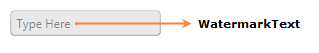

You can customize the Visual appearance of the Watermark Text by using the WatermarkTemplate property.
|
XAML
<syncfusion:IntegerTextBox x:Name="integerTextBox" Width="150" Height="25" WatermarkText="Type Here" CornerRadius="3" WatermarkTextIsVisible="True" WatermarkOpacity="0.5" UseNullOption="True"> <syncfusion:IntegerTextBox.WatermarkTemplate> <DataTemplate> <Border Background="LightGray"> <TextBlock Text="{Binding}" VerticalAlignment="Center" Margin="5,0,0,0"/> </Border> </DataTemplate> </syncfusion:IntegerTextBox.WatermarkTemplate> </syncfusion:IntegerTextBox> |

Figure 632: IntegerTextBox with WatermarkText